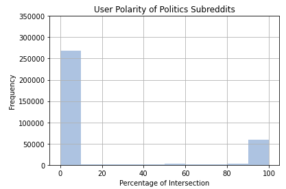
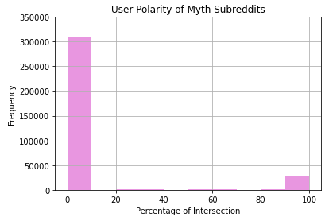

To analyze variations in echo chambers, we will be studying how likely users are to participate in and consume either factual, politically misinformative, or mythological information. Observing the tendencies of any one subreddit’s user base will shed light on its users’ general consumption patterns. Aggregated usernames and their associated subreddits, therefore, will provide the basis for this analysis. One metric that we used to try and detect echo chambers within Reddit were to look at the user polarity, which is essentially how often a user interacts outside of the subreddit that they usually post in. As mentioned before, we had defined three umbrella categories that we wanted to look at: politically misinformation, urban myth misinformation, and scientific information. User polarity would then define how often a user interacts with the other two subreddit categories.
This is showing specifically at the political misinformation category of subreddits we examined. The x-axis goes from a range of 0% - 100%, indicating the percentage of ...
